Создание игр в Roblox Studio
Кастомизация персонажей
Кастомизация базовой одежды
Это занятие открывает модуль, посвященный работе с неигровыми персонажами, созданию квестов и повествованию сюжета. В первом занятии нам предстоит поработать с созданием неигровых персонажей и их кастомизацией, научившись работать с системой одежды Roblox.
Для этого занятия нам пригодится плагин Insert Asset, необходимо установить его в окне ToolBox.
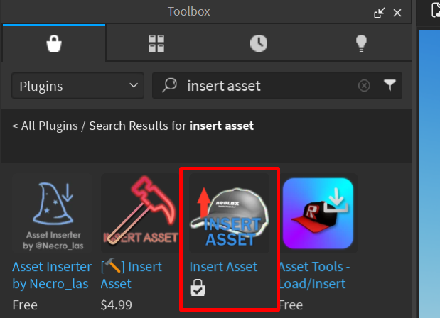Базовая одежда
С помощью плагина Rig Builder создайте базового персонажа R15.
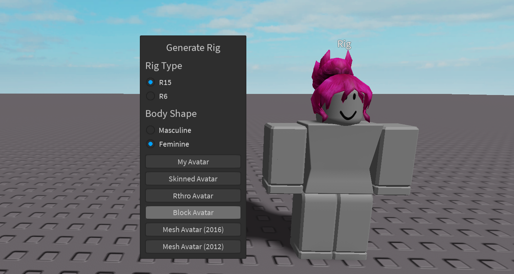Базовая система одежды персонажа работает на основе специальных объектов Clothing. Они бывают двух видов - Shirt и Pants. Оба этих объекта на самом деле просто текстуры, накладывающиеся на верхнюю и нижнюю части аватара.
Выберите вашего персонажа и через Explorer нажмите на плюсик и добавьте к нему объекты Shirt и Pants. Переименуйте их соответствующим образом.
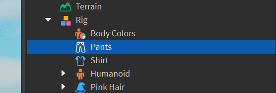За отображаемую одежду отвечают параметры ShirtTemplate у Shirt и PantsTemplate у Pants в окне Properties. В них содержится ссылка на текстуру, хранящуюся на сервере Roblox. Чтобы выбрать одежду, которая должна отображаться на персонаже, нам необходимо найти эту одежду на сайте Roblox.
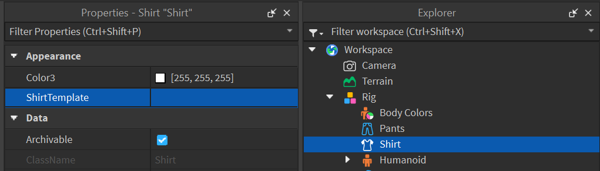Необходимо открыть браузер и перейти на сайт roblox.com.
В Roblox Studio вы можете использовать абсолютно любые ассеты, загруженные в каталог Roblox. Перейдите в раздел Avatar.
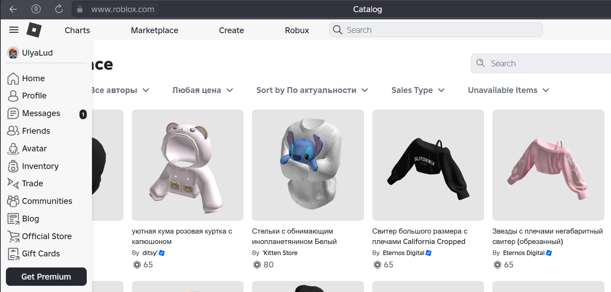Здесь есть множество различной одежды, однако, пока что подойдёт далеко не вся. В этой части занятия необходимо выбрать классические элементы одежды - текстуры, накладывающиеся на персонажа. Перейдите в раздел All Clothing.
Выберите верхнюю одежду, которая вам понравится, и откройте ее. На открывшейся странице нужно найти ID одежды в поисковой строке - это цифры, которые необходимо скопировать:
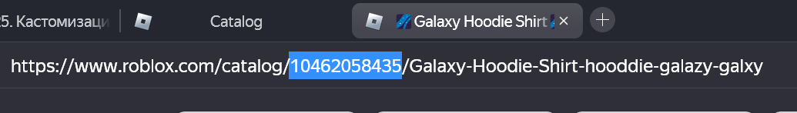Скопируйте ID и перейдите обратно в Roblox Studio. В настройках объекта Shirt вставьте скопированный ID в параметр ShirtTemplate. На персонаже отобразится одежда, которую вы выбрали на сайте:
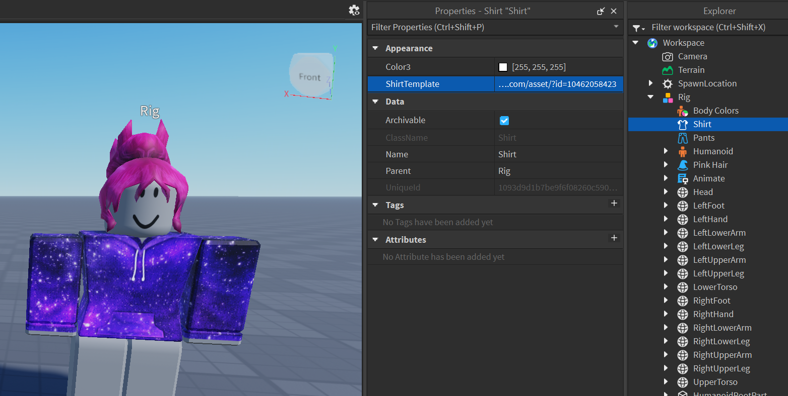Таким же образом добавьте персонажу штаны:
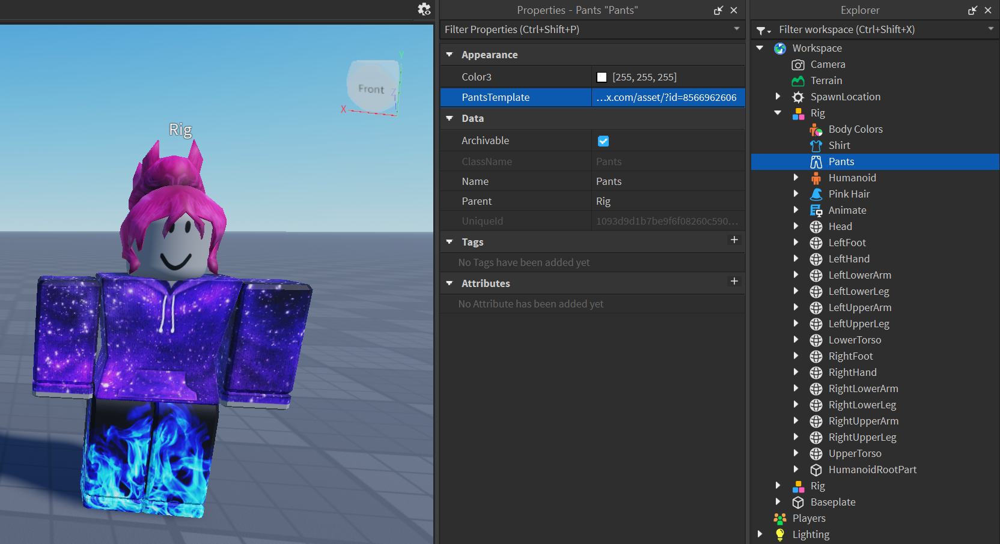Замена лица
Изменим лицо. Для этого в частях тела персонажа найдите голову и раскройте её дочерние объекты. В них вы найдете декаль face - изображение, отображающееся на лице:
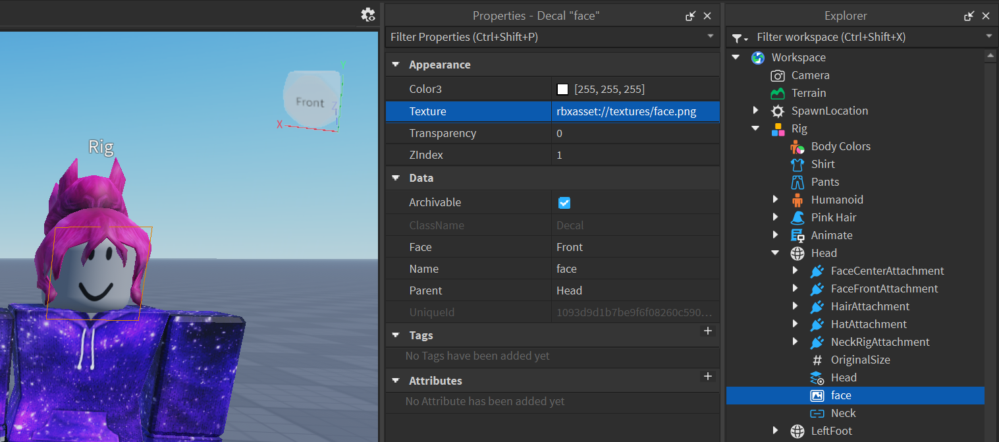Откройте сайт Roblox и в поиске по объектам напишите слово face. Выберите подходящее лицо и таким же образом скопируйте его ID, после чего вставьте в адрес текстуры декали:
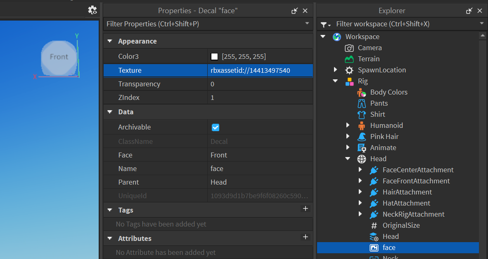Поскольку face представляет собой декаль, мы также можем добавить своё изображение в качестве лица. Для этого найдите в интернете картинку лица для роблокса и скачайте её на устройство. Снова выберите face, нажмите на строку Texture в окне Properties, после чего нажмите Add Image - Choose File и выберите изображение лица, которое сохранили.
Цвета частей тела
Добавим последнюю деталь - окраску тела персонажа. Для этого добавьте к его дочерним объектам специальный объект BodyColors.
Откройте его параметры - в них вы можете настроить цвет детали каждой из частей тела персонажа.
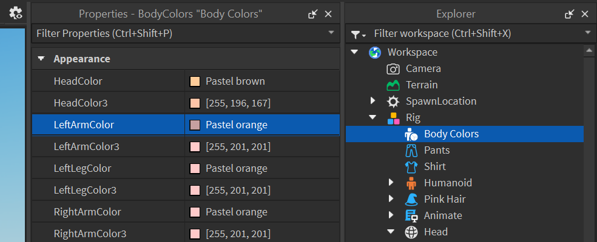Аксессуары
Помимо изменения текстур персонажа, вы можете добавлять и более сложные аксессуары. Аксессуары - это 3D модели, которые крепятся к персонажу при помощи специальных объектов Attachment.
Такие объекты, как волосы, очки, сумки, рюкзаки, букеты цветов, питомцы на плече и т.д., добавляются при помощи Accessory - отдельного типа объектов в Roblox, прикрепляющихся к скелету персонажа.
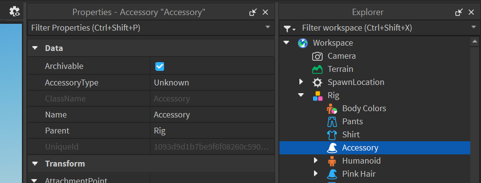Добавление волос
Чтобы добавить персонажу волосы, вам необходимо найти причёску и также скопировать ее ID. Перейдите на сайт Roblox и найдите подходящие волосы.
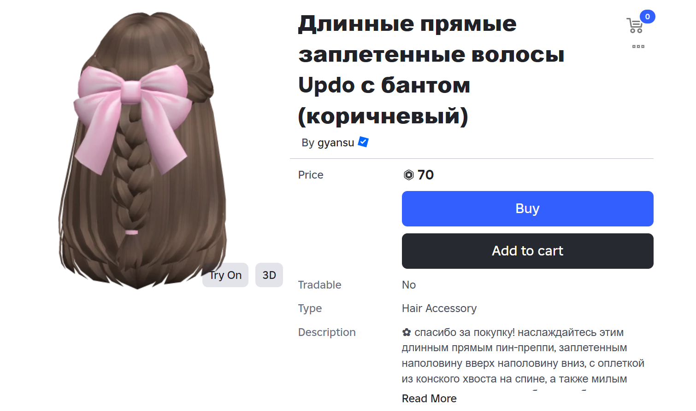Чтобы загрузить их в проект, используйте плагин, установленный в начале занятия - Insert Asset. Откройте его и в поле ID вставьте скопированный ID причёски:
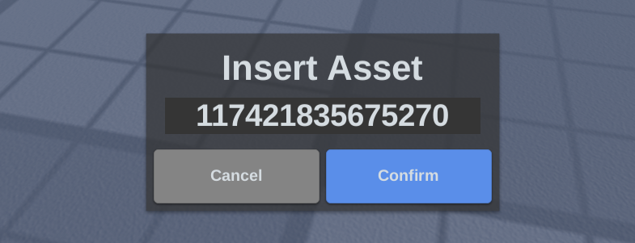В вашу сцену добавится аксессуар. Найдите его в Explorer и перетащите внутрь персонажа - аксессуар самостоятельно найдёт правильное положение на теле персонажа (если какие-то волосы уже были установлены к персонажу, удалите их). В случае если он прикрепился не совсем правильно, подвиньте/отмасштабируйте его:
Таким образом можно подгружать ассеты, прикрепляя их к персонажу. Однако, не все аксессуары работают так просто.
Продвинутая одежда
В каталоге объектов Roblox одежды вы могли заметить достаточно качественные и красивые элементы одежды, которые также можно добавить к проекту.
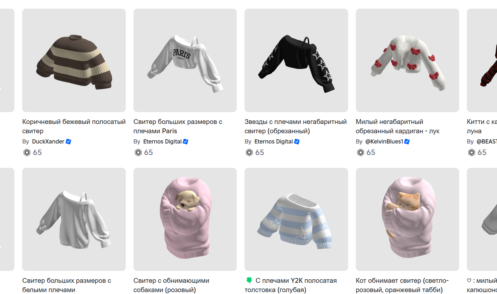Это элементы одежды, использующие технологию Layered Clothing. Она была добавлена в октябре 2021 и позволила использовать сложные 3D модели, «подгоняя» их под геометрию персонажей Roblox.
На сайте Roblox найдите сложную верхнюю одежду для персонажа - пальто, куртку, худи и т.д. Используя Insert Asset, загрузите её в сцену. Как и в прошлый раз, перетащите аксессуар в группу персонажа.
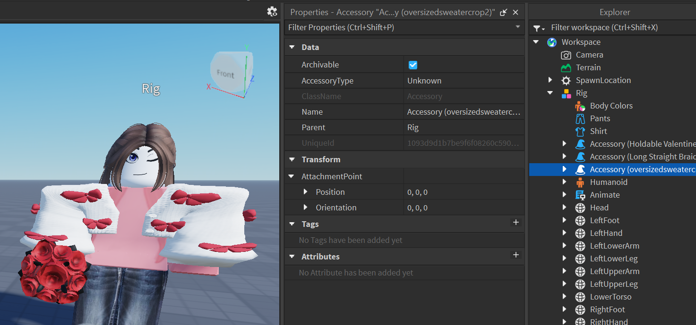Мы можем работать со сложной одеждой внутри Roblox Studio благодаря встроенной технологии Layered Clothing. Во вкладке Avatar находится один из плагинов для образа персонажей, который называется Accessory Fitting Tool:
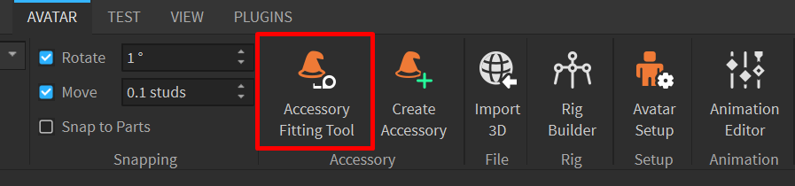Практика кастомизации персонажей
Попрактикуемся с использованием аксессуаров и созданием неигрового персонажа, которого можно использовать далее в проекте. Этот персонаж должен будет выдавать квесты игроку и рассказывать о мире, в котором он находится.
Это может быть глава какой-то гильдии, космический наемник, маг-отшельник, король, палладин и т.д. (кто угодно).
Не забудем опубликовать получившегося персонажа в Toolbox. Для этого кликните правой клавишей мыши на персонажа в окне Explorer и выберите Save to Roblox:
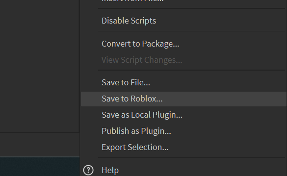Введите название персонажа, добавьте описание, а также выберите Model в разделе Asset Category. Нажмите на кнопку Save:
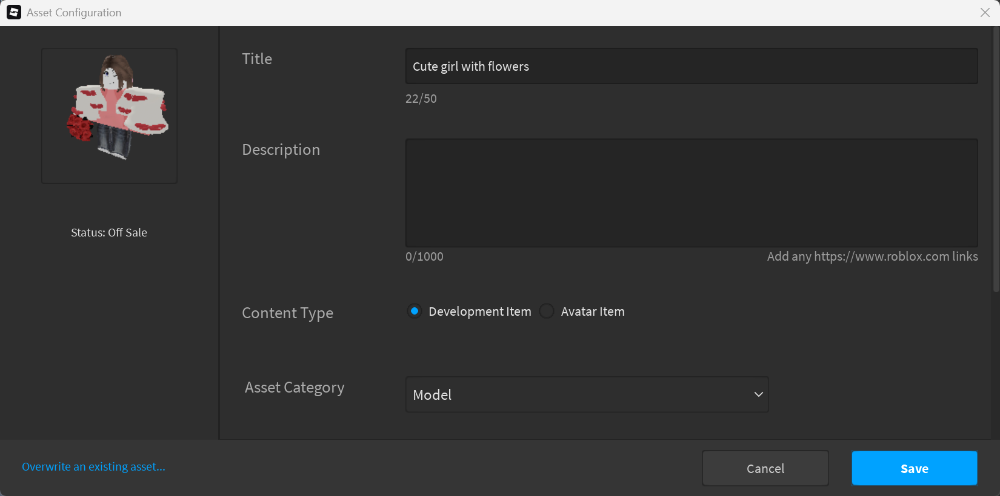После этого персонажа можно будет найти в списке опубликованных объектов (вкладка с лампочкой в Toolbox):
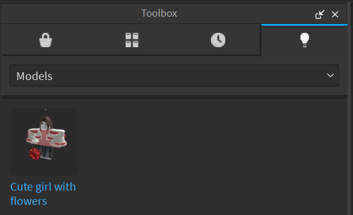Домашкаа 😁
Создать ещё одного персонажа и опубликовать его в ToolBox. Это может быть противник, с которым игрок будет сражаться, ещё один NPC, выдающий квесты, или игровой персонаж.